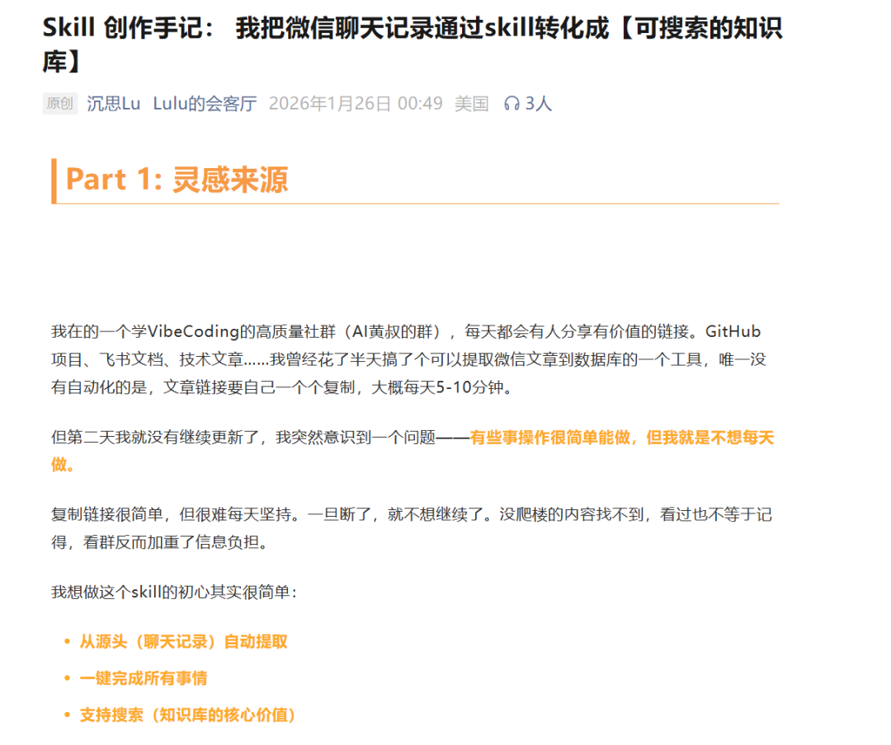
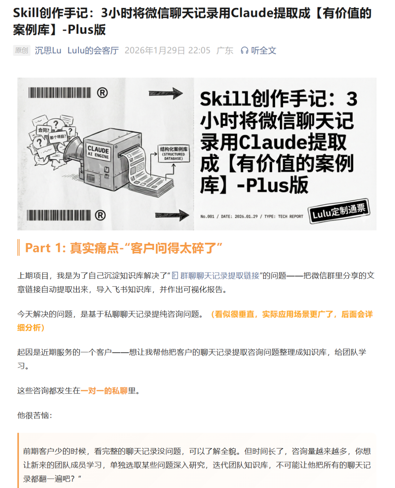
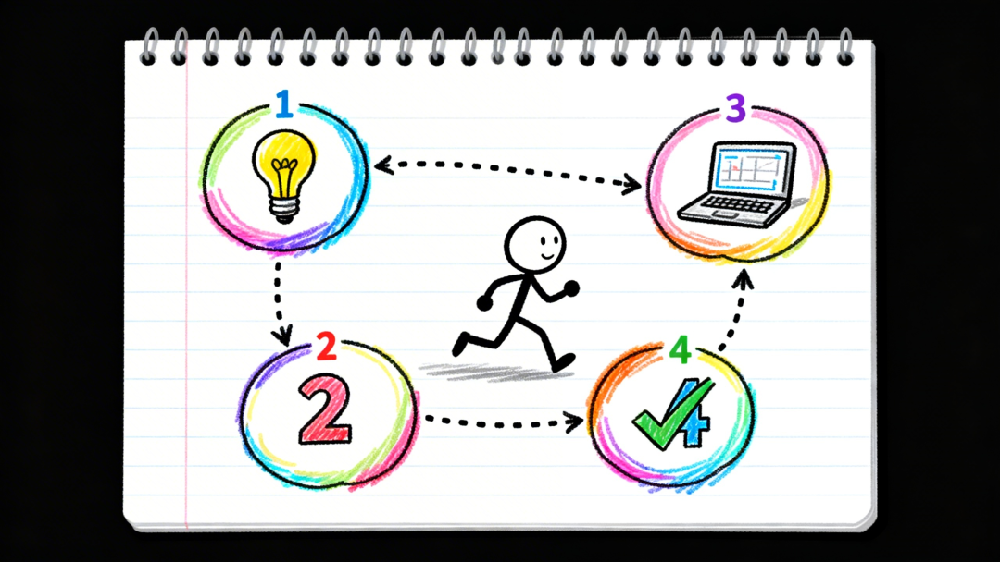
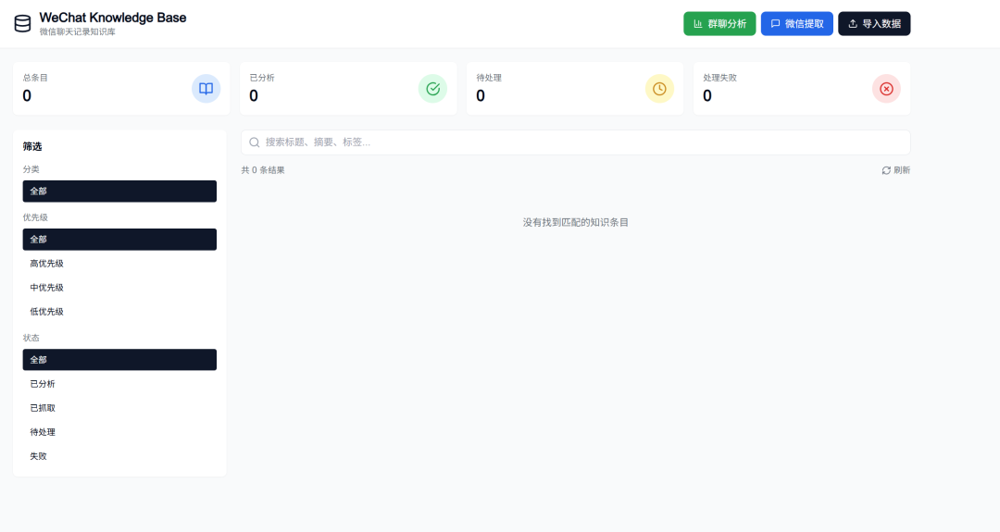
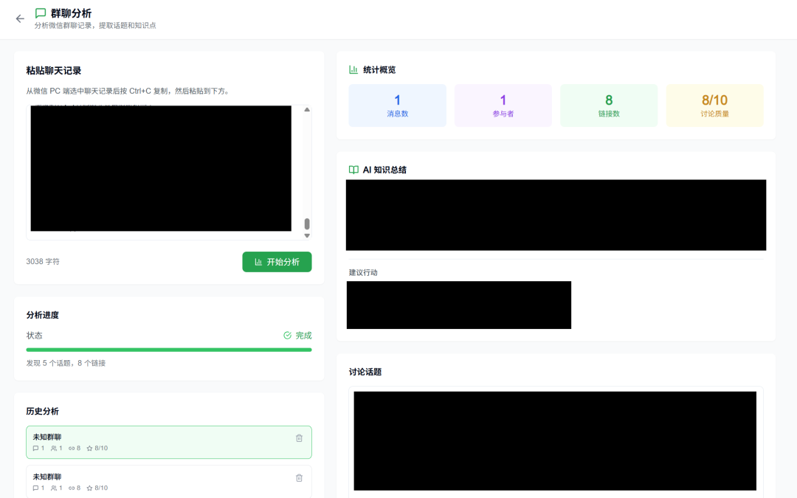
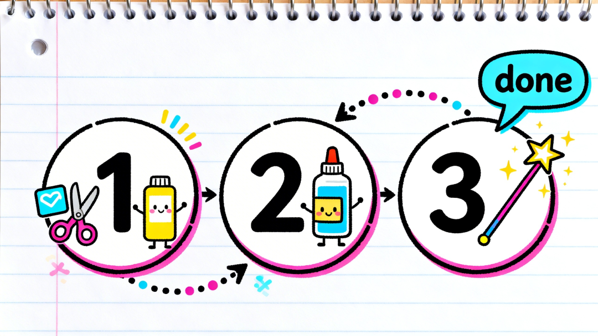

挑战日更100天，今天是日更第93天
Hi 大家好，我是贺伯，一个初学AI编程与工作流的工厂IE，每天分享使用Vibe coding跟n8n工作流的实战过程
-----------------------------------------------------------------------
💬QUOTE
群多不怕，怕的是回头翻记录找不到重点
接续这阵子的工具开发分享
最近遇到一个贼现实的问题——加的学习群太多了，消息根本看不过来(目前光活跃群就有十几个)
每天打开微信，未读消息 99+ 是常态。关键是里面夹杂着作业通知、资源分享、技术讨论，真正有价值的内容可能就那么几条，但你不翻完根本不知道哪条重要
之前的做法是手动翻，一个群一个群看。效率嘛...跟工厂里人工检验产品一样，费时费力还容易漏检
起因：刷到一篇文章，思路有点东西
前两天刷公众号看到一篇讲微信群聊分析的文章，大概意思是用 AI 把群聊记录丢进去，自动提取重点、整理摘要
当时第一反应：这不就是我需要的嘛
参考文章里的截图长这样：

思路挺清晰的，把聊天记录导出来，扔给 AI 做结构化分析：

看完之后立马去翻对应的 GitHub 仓库，准备直接 clone 下来用
结果点进去——404
作者跑路了。仓库整个没了
算了，自己造一个
既然现成的用不了，那就自己搞一个(反正也不是第一次干这种事了)
这次搭配我之前开发的 project-workflow skill，从计划到完成一气呵成
整个开发过程大概花了 30分钟，拆解一下：
说真的，这个速度放以前想都不敢想

工具不是越复杂越好，能解决问题就行
成品长啥样
先看整体界面：

核心功能就一个——把微信群的聊天记录贴进去，点分析，AI 帮你整理出：
- 话题摘要
：群里聊了哪些主题 - 关键信息
：重要通知、作业、截止日期 - 资源链接
：对话中分享的所有链接，自动提取 - 活跃分析
：谁在说话、说了多少(这个纯属好奇加的)
链接提取这块还挺实用的，效果如下：

群里经常有人丢链接，以前得一条条翻才能找到。现在直接一键提取，整整齐齐
对比一下效率提升吧
差距就在这。反正我是回不去手动翻的日子了
怎么用
操作流程贼简单，三步：
第一步：打开 PC 版微信，进入目标群聊，选中消息(目前 PC 版最多选 100条)，复制
第二步：粘贴到工具的输入框
第三步：点「分析」，等几秒出结果

注意：目前只支持手动复制粘贴，还没有做到自动抓取群聊内容(这块涉及微信的接口限制，后续会继续研究)
开发过程的一些细节
技术选型
前端用的纯 HTML + JavaScript，没上什么框架。原因很简单——这就是个工具页面，够用就行(后续如果要加功能再考虑 Vue 或 React)
AI 分析部分接的大模型 API，把群聊文本丢过去，让它按固定格式返回结构化结果
踩坑记录
消息格式解析：微信复制出来的消息格式不太规则，有时候是「昵称：内容」，有时候带时间戳，有时候还有系统消息混在里面。花了点时间写正则来处理(目前还不完美，持续优化中)
链接提取：群聊里的链接各种各样，有完整 URL 的，有短链的，还有小程序卡片的文字描述。目前只能提取标准 URL 格式的(小程序那种暂时没法处理)
内容去噪：群里的水聊、表情包、拍一拍这些要过滤掉，只保留有信息量的内容。这块靠 prompt 调教，效果还行
📝GOLDEN
造工具跟工厂改善一个道理：先跑起来，再慢慢优化
后续计划
功能基本能用了，但还有几个想做的：
- 自动抓取群聊
：研究能不能绕过手动复制，直接读取聊天记录(难度比较大，微信这块管的严) - 定时分析
：设定时间自动跑分析，比如每天晚上 11 点自动整理当天的群消息 - 多群汇总
：把多个群的分析结果合到一起看，像工厂的日报汇总一样 - 关键词订阅
：设置关注的关键词，有匹配的消息自动推送(这个对我来说最实用)
目前还在持续迭代中，有进展再分享
最后
说实话做这个工具的初衷就是——群太多，人太懒，能让 AI 干的事就别自己干
整个过程从发现需求到工具上线 30分钟，Claude Code + project-workflow 这套组合拳确实好使(虽然目前功能还比较基础)
够用了。有问题底下留言
以上是今天的分享，希望小伙伴有些收获
-----------------------------------------------------------------------
在学习AI编程的路上，老徐AI编程做产品的知识星球给了很多的帮助
每个月都有训练营可以参加( 参加星球的伙伴们免费)
基本上0基础的小白都能轻易地入门(就是我啦)
想要一起加入AI编程的行列，但是又没有好的入门管道的朋友们，欢迎一起加入切磋
留言或后台私信"AI编程"，将提供过去这几个月以来，学习AI编程的一些资讯以及创建的个人知识库(每日更新)
【ima知识库】AI编程工具资料库 https://ima.qq.com/wiki/?shareId=2e1dc0ad31a15e3fc6e8b1954f4c0647ba3bd6ee86244230246d4933d160a02f
我用Google Antigravity开发工具的过程请参考
Day18 手把手教你安装Google Antigravity！搭配Gemini 3.0 Pro，编程效率翻倍
Day19 Google AI Studio+Anitgravity黄金组合！零基础也能搞定代码复刻
Day20: Google Antigravity界面到输出全中文改造，小白也能秒上手
Day21: 设置3步搞定！让你的Google Antigravity从此自动写代码、自测运行
Day22 : Google AI Studio 从Build到Anitgravity，程序员会被全链路“承包”吗？
Day23 超详细！Supabase配置GitHub/Google登录指南，附Claude对话秘籍
Day28 终极对决!Anitgravity双核驱动:Claude Opus 4.5硬刚Gemini 3.0 Pro
Day29 无需切换工具！Claude+Gemini交叉评估，高效产出PRD的终极工作流
我是贺伯，一个35+的工厂IE主管，正在用工业思维拆解AI编程，每天记录我从0基础到用AI赚到第一块钱的全过程。